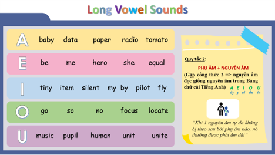
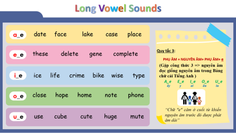

🎙️ Tiến độ luyện phát âm các câu:
0 / 10 câu hoàn thành
📘 A2 – CÁC QUY TẮC ĐẶC BIỆT TRONG PHÁT ÂM (2)
Trong bài học này chúng ta tiếp tục tìm hiểu hai quy tắc rất quan trọng của nguyên âm:
- ⭐ Quy tắc 2 – Long Vowel Sound (Âm nguyên âm dài)
- ⭐ Quy tắc 3 – Silent E (Chữ E câm)
Khi nắm vững hai quy tắc này, người học sẽ đọc đúng phần lớn các từ tiếng Anh thông dụng.
⭐ QUY TẮC 2 – LONG VOWEL SOUND
📖 Quy tắc:
Khi một nguyên âm (A, E, I, O, U) đứng tự do hoặc ở cuối âm tiết, nguyên âm đó thường được phát âm theo tên chữ cái của nó (Long Vowel Sound).

Long Vowel Rule
| Nguyên âm | Ví dụ (Click để nghe từ) |
|---|---|
| A /eɪ/ | 🔊 baby 🔊 data 🔊 paper 🔊 radio 🔊 tomato |
| E /iː/ | 🔊 be 🔊 me 🔊 hero 🔊 she 🔊 equal |
| I /aɪ/ | 🔊 tiny 🔊 item 🔊 silent 🔊 my 🔊 pilot 🔊 fly |
| O /oʊ/ | 🔊 go 🔊 so 🔊 focus 🔊 locate |
| U /juː/ | 🔊 music 🔊 pupil 🔊 human 🔊 unit 🔊 unite |
⭐ QUY TẮC 3 – SILENT E
📖 Quy tắc:
Khi một từ kết thúc bằng chữ e, và trước chữ e là một phụ âm, nguyên âm đứng trước phụ âm đó thường được đọc là âm dài (Long Vowel), còn chữ e cuối từ sẽ không phát âm (Silent E).

Silent E Rule
| Mẫu | Ví dụ (Click để nghe từ) | Quy tắc |
|---|---|---|
| a_e | 🔊 date 🔊 face 🔊 lake 🔊 case 🔊 place | /eɪ/ |
| e_e | 🔊 these 🔊 delete 🔊 gene 🔊 complete | /iː/ |
| i_e | 🔊 ice 🔊 life 🔊 crime 🔊 bike 🔊 wise 🔊 type | /aɪ/ |
| o_e | 🔊 close 🔊 hope 🔊 home 🔊 note 🔊 phone | /oʊ/ |
| u_e | 🔊 use 🔊 cube 🔊 cute 🔊 huge 🔊 mute | /juː/ |
🎧 A. LUYỆN TẬP CÂU CƠ BẢN
Hãy nghe và nhấn nút 🎙️ Ghi âm cho cả 5 câu dưới đây:
| Chủ điểm | Câu luyện tập | Thao tác |
|---|---|---|
| Long Vowel A | Baby Tom uses paper to draw a radio. | |
| Long Vowel E | She is a hero, and we all believe in her. | |
| Long Vowel I | My tiny bike is by the river. | |
| Long Vowel O | Please go home and close the door. | |
| Long Vowel U | Students use music to study in the future. |
🎧 B. LUYỆN TẬP CÂU ỨNG DỤNG
Hoàn thành nấc ghi âm 5 câu dưới đây để kích hoạt mở bài A3:
| # | Câu luyện tập | Thao tác |
|---|---|---|
| 1 |
The nurse writes the patient's information on paper and gives first aid to help relieve the patient's pain while waiting to see the doctor.
→ Y tá ghi thông tin của bệnh nhân lên giấy và sơ cứu để giúp giảm đau... |
|
| 2 |
The doctor checks the patient's face and gives the right dose of medicine.
→ Bác sĩ kiểm tra khuôn mặt của bệnh nhân và đưa ra liều thuốc phù hợp. |
|
| 3 |
The student studies human biology, and he listens to music to relax after class.
→ Sinh viên học sinh học cơ thể người, và anh ấy nghe nhạc để thư giãn... |
|
| 4 |
Today, a pharmacist can use a phone to check if a drug is in stock. He can also use the phone to dispense medication and issue an invoice.
→ Ngày nay, dược sĩ có thể dùng điện thoại để kiểm tra xem thuốc còn trong kho không... |
|
| 5 |
In a pharmacy chain, a pharmacist can sell some basic items that are not medicine, and these items are for daily use.
→ Ở chuỗi nhà thuốc, dược sĩ có thể bán một số mặt hàng thiết yếu... |